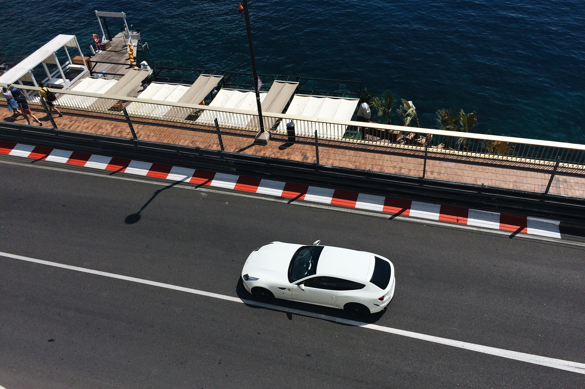

Just Another Grocery Run
The basement was dimly lit, quiet. I pressed the button on the key. A muffled click and a flash of the hazard lights indicated the car awaited my arrival. The interiors were warmly lit. A tug on the handle and the door swung open a full ninety degrees. I hoisted myself in, and the door followed me, thudding shut. Quiet enveloped me. My hands instinctively reached for the seat belt and secured me. The key slid into the ignition slot, and turned to activate the electronics. Lights flickered to life on the dashboard. Needles floated to their positions enclosed by their gauges. All warning lights flickered away except one. I depressed the handbrake, and the last warning switched off.

Foot on brake, I twisted the key as far as it could. A weak whirring gave way to a confident thrum. It was alive, and breathing. I let it sit still for a moment, letting it fully awaken. A gentle prod on the throttle was met with a eager grunt. It was ready. Headlights switched on, and the gear lever moved back to R. I slowly disengaged the brake pedal, letting it roll out slowly into position. Shifting the lever further back to D, the car rolls forward, heading down the narrow alleyway ahead. A 90 degree right turn comes up. The brakes are cold, and they grab the car to a near halt. A slow steering rack heaves it on to its left and completes the turn. A ramp to daylight gives the engine its first opportunity to stretch its legs. It does so grumpily, still cold from last nights sleep. I reach for the sunglasses as the first rays of intense light permeate the cabin.
Eyes protected, I gingerly ease into traffic. I find myself holding up cars behind me as I crawl along, letting the engine warm up. The blue light flickers off, and I give the accelerator pedal a good stretch. The engine responds with annoyance, pushing me back into my seat. I hold on, letting the revs head north, savouring the first sounds of the VTEC, before easing off for a left turn. Now upto temperature, the brakes do as they’re told and arrest the car progress.. I hoist the car left, apexing early and let it run wide, correcting just before brushing the divider. The roads soon widen, and slow moving traffic appears in the distance. I cruise up to the back of this group, and rest my finger on the left paddle. When the time is right, tap it twice. For a moment, nothing changes. Then, three things happen simultaneously. I’m pushed back into my seat with violence as the engine throws a massive fit. Pushed beyond 3000 rpm, a demon posses the four cylinders, propelling the crankshaft with rage. The slow moving cloud of traffic is quickly overhauled, and slowly becomes ever smaller in the rear view mirror. I pull the right paddle, and within a moment, all calm is restored.
The engine is purring along, the A/C is doing its job quietly and the stereo is calmly serving up tunes from my phone. It’s as if nothing had ever happened. The only evidence of the incident is the small grin on my face. As I continue on my way to pick up groceries, I’m looking for the next group of stragglers to pick off. The small joys of driving a regular car that likes being driven hard.